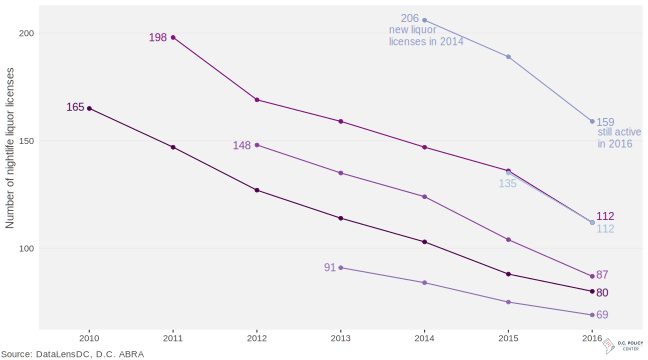

Nightlife in D.C. has grown dramatically in recent years, from just over 800 bars, restaurants, and nightclubs in 2008 to just under 1,300 in 2016. While the conventional wisdom that most restaurants don’t survive their first year is far from true, nightlife in D.C. hasn’t been all boom—even in this period of rapid growth there were many short-lived bars, restaurants, and nightclubs.
The chart below tracks how many new liquor licenses were created for each from 2010 to 2015 and how many liquor licenses remained active in the following years. In 2010, for instance, there were 165 new liquor licenses granted to restaurants, bars, and nightclubs; by 2016, just under half of those same businesses remained.
Roughly ten percent of nightlife doesn't survive for each year of business
Number of new D.C. liquor licenses, 2010-15, and their survival rates

Roughly 10 percent of bars, restaurants, and nightclubs exit each business year, but openings and survival rates seem highly cyclical: 2011 saw many new openings (198), but nearly 15 percent of those businesses didn’t survive the first year. The following two years had markedly lower new liquor licenses, suggesting an unsustainable boom in 2010-2011 followed by an initial higher closure rate and a shift to more conservative expansion with fewer closings. There is another peak in 2014, with the highest number of new liquor licenses across the period. However, a large uptick in closings across the board in 2015-2016 potentially signals oversaturation of the market, suggesting that the District’s nightlife and restaurant boom could be coming to an end.
Nightlife business entry and exit patterns vary across the city, reflecting each neighborhood’s character and nightlife maturity. The infographic below shows the opening and closing of restaurants, bars, and nightclubs through the number of new and ended liquor licenses.
High nightlife churn along central nightlife corridors
New and closed nightlife liquor licenses in D.C., 2008-16. Neighborhoods organized roughly geographically.
The first period of data, 2008-2009, shows almost no activity across D.C., possibly due to the uncertainty and pullback in loans during and after the Great Recession. There’s is a bounceback the next year, particularly along central corridors. The area encompassing Dupont and the K Street corridor saw the greatest number of new licenses in early years as well as the greatest number of closed licenses, making it the area with the most nightlife churn. Downtown and Chinatown also experienced markedly high churn rates. The Northeast side of Capitol Hill experienced early growth in liquor licenses, largely driven by H Street, and then a later spike with the opening of Union Market. Neighborhoods more on the periphery of nightlife in 2008, such as Bloomingdale, Brookland, and Ivy City, have seen a slow, steady growth in nightlife options. Spikes in closures in 2016 are seen across Georgetown, Adams Morgan, Columbia Heights, Dupont, Shaw, and Chinatown, suggesting this nightlife boom may not last much longer.
Technical notes: Data was obtained from the Alcoholic Beverage Regulation Administration via FOIA. Years shown above refer to specific reporting months: December 2008, December 2009, November 2010, October 2011, December 2012, August 2013, August 2014, July 2015, and August 2016. Neighborhoods are defined by D.C. Office of Planning's Neighborhood Clusters. You can find complete code and data for this post on my github page.